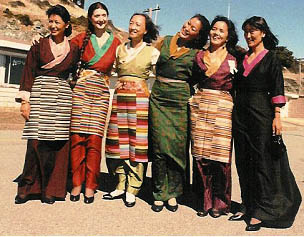

About Bay Area Friends of Tibet

1989 BAFOT Board
Former Bay Area Friends of Tibet (BAFoT) President Diane Hume once referred to BAFoT as "the mother redwood tree" in describing the off-shoots of Tibet Support Groups which have sprung up around the Bay Area as a result of work originally started while at BAFoT. BAFoT can point to its own success during the past 22 years by pointing to the success of these organizations whose leaders first worked with BAFoT, organizations including the Tibetan Association of Northern California (TANC), Tibet Justice Center, the Commitee of 100, and others.
Some of the original founders of BAFoT have now become legendary in the Tibet movement, including Tenzing Sonam, son of Lhamo Tsering, Chief of Operations of the Mustang Resistance Force; Dr. Michael van Walt van Praag, former President of the Underrepresented Nations and People's Organization (UNPO); and many of the elected officers of TANC. BAFoT continues to support Tibetans while working closely with other Bay Area Tibetan groups.
View a list of the original founders. (pdf) View early photos from 1984.
View a a presentation on the 25th anniversary of BAFOT (pdf 2.4Mb).
View a presentation on the Tibetan Resettlement Project (pdf 5.5Mb).
BAFoT is proud to also be a member of the International Tibet Support Network (ITSN). This group enhances our international cooperation on Tibetan issues.

Click image to enlarge
Support
Chinese American Outreach
Since 2003
BAFoT has aimed to follow His Holiness the Dalai Lama's guidance
to attempt to bridge the gap in understanding that exists between
the Chinese and the Tibetan peoples.
Are you interested in joining our active and motivated cultural outreach committee? Please contact Giovanni Vassallo (415-409-6353)
Educational
Outreach
BAFoT organizes special events that introduce hundreds of people
to Tibetan issues. Tibet Day cultural
fairs have been held annually, since 1984, in San Francisco, the
East Bay, and Santa Cruz. Plans to extend Tibet Day into the North
Bay are underway. BAFoT also sponsors film festivals,lectures, and
performances by Tibetan artists. Volunteers distribute educational
materials at various Bay Area events year-round.

Grassroots
Action
BAFoT works with other Tibet support groups such as the Tibetan
Association of Northern California (TANC) to organize activities
on behalf of Tibet's struggle for human rights and self-determination,
and takes part in events that promote Tibetan culture, such as the
Pacifica Tibetan Arts Festival. BAFoT's urgent action network conducts
letter-writing campaigns and notifies the media of Tibet news and
local events. BAFoT newsletters provides the latest information on
current Tibetan issues and suggests actions that individuals can take
to address the crisis in Tibet.
Work with
the Tibetan Resettlement Project
In the early 1990s, BAFoT facilitated the immigration of 60 Tibetans
to the Bay Area. Since that time, BAFoT has helped these Tibetans
to reunify with their families. With a dedicated group of volunteers,
BAFoT continues to help the Tibetan community with employment and
English skills.
Please help us to help Tibetans in their struggle for self-determination and the preservation of their culture. You can support us today by becoming a member, by signing up to volunteer or by making a tax-deductible donation.